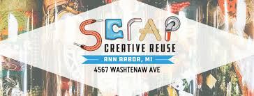
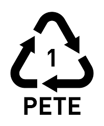
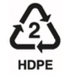
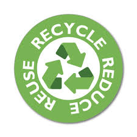

Reduce & Reuse
Because not everything is recyclable...
Simple ways to reuse items:
- Use old shirts as rags
- Get Crafty
- Compost
Bringing your own water bottle is another excellent way to stay hydrated while staying away from harmful microplastics.
What is Recyclable?
The numbers on plastic items can tell you a lot! The numbers that are most likely to be recycled are #1 and #2 while #3 and #6 are least likely.
|  | PETE or PET (polyethylene terephthalate) AVOID REUSING | |
|---|---|---|
| Common, easy to recycle plastic. Found in water and soda bottles food containers. | Absorbs bacteria and flavors | |
|  | HDPE (high-density polyethylene) | |
| A non-transparent plastic. Commonly found in household cleaner bottles, some food containers, and cutting boards. | Transmits no known chemicals into food |
Click the photo to learn more
